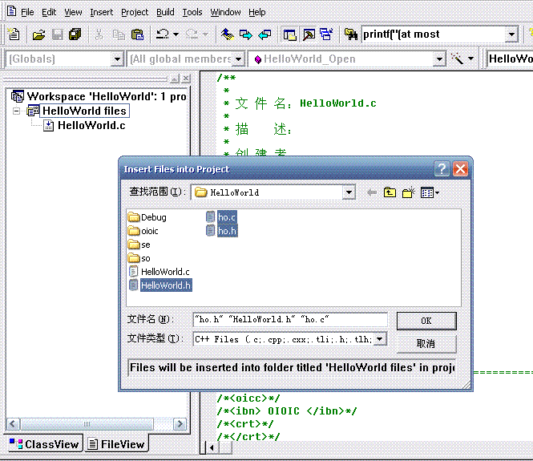
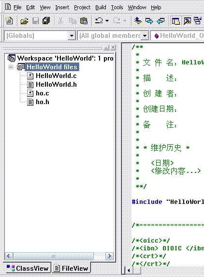
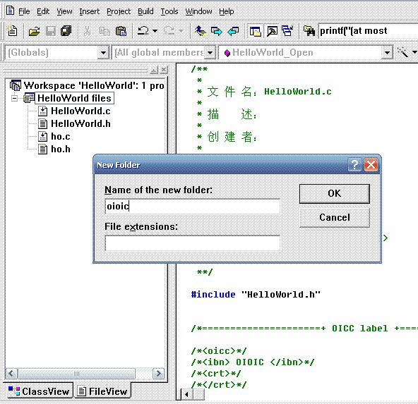
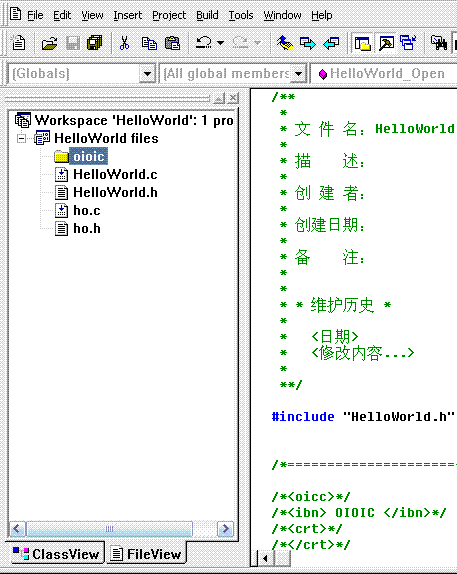
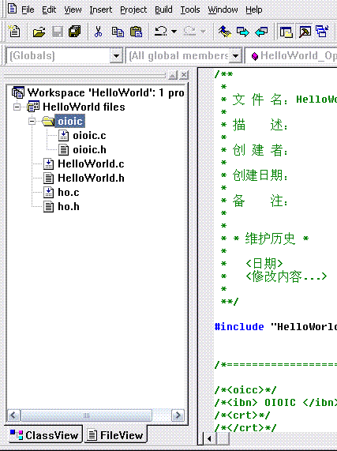
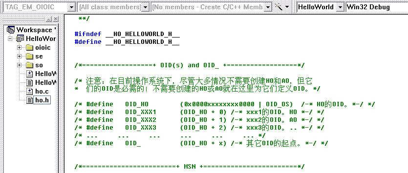
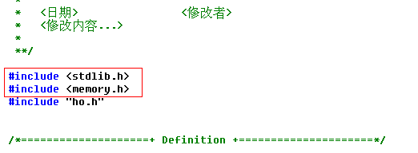
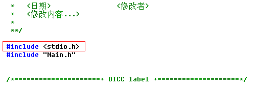
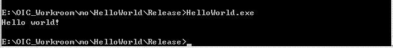

历史教材（1.0.6）：旧 API 和 VC6 步骤仅供参考，当前开发请阅读新版教程与构建指南。 Current guide
第二章 Hello,World
编写一个 “Hello world” 程序，熟悉 OIOIC 程序的代码树结构。 （下载源代码）
Step 1: 在命令行上用 oicc 创建名为 HelloWorld 的 MO 类型节点。

在创建 HO 类型节点时，HO 节点的父目录名必须是对应名称的小写（注意，Windows 对文件夹名的大小写不敏感），即：MO 节点的是 “mo” 、CO 节点的是 “co”、RO 节点的是 “ro”。如果没有，oicc 就会自动创建一个。所以在这个例子中，如果指定的目录（E:\OIC_Workroom）下没有 “mo” 文件夹，oicc 就自动生成了一个。
现在看看 E:\OIC_Workroom\mo 目录下是不是多了个 HelloWorld 节点。
Step 2: 在 E:\OIC_Workroom\mo\HelloWorld 目录下建一个 oioic 目录，并把 oioic.c 和 oioic.h 文件复制到 oioic 目录下。
Step 3: 为 HelloWorld 创建 VC 工程。
用 VC（本书用的是 VC6.0）打开 E:\OIC_Workroom\mo\HelloWorld\HelloWorld.c 文件，然后 Build，在弹出的对话框点击“是”，VC 自动在 E:\OIC_Workroom\mo\HelloWorld 目录下生成 HelloWorld 的 VC 工程文件。

Step 4: 把 HelloWorld 目录里的 .c 和 .h 文件和 oioic 目录及其内的 .c 和 .h 文件加入到工程中。
在 Workspace 窗口的 FileView 视图中把 HelloWorld 目录里的 .c 和 .h 文件和 oioic 目录及其内的 .c 和 .h 文件加入到工程中。
1. 加入 E:\OIC_Workroom\mo\HelloWorld 目录下的 .h 和 .c 文件。

在“查找范围”下拉框中定位 E:\OIC_Workroom\mo\HelloWorld 目录，然后选中 HelloWorld.h、ho.h、ho.c 文件（HelloWorld.c 文件已在工程中），点击 “OK” 后，三个文件就加入了工程。


2. 把 E:\OIC_Workroom\mo\HelloWorld\oioic 目录下的 oioic.h 和 oioic.c 文件加入工程。

如下输入 “oioic” 后，点击 “OK”，建一个 oioic 文件夹。



在“查找范围”下拉框中定位 E:\OIC_Workroom\mo\HelloWorld\oioic 目录，然后选中 oioic.h 和 oioic.c 文件，点击 “OK” 后，文件加入工程。


Step 5: 用同样的方法，把 se、so 目录及它们的子目录（包括各目录下的 .h 和 .c 文件）都加入到工程中。

Step 6: 参照 ho.h 文件里的 OID 定义模板格式定义需要的 OID。
找到 OID 定义模板。

打开 OID_HO 和 OID_ 的注释，并定义它们。

Step 7: 按等级次序为各层目录的 .h 文件包含需要的 .h 文件。
1. 在 ho.h 文件中：#include "oioic/oioic.h"
2. 在 HelloWorld.h 文件中：#include "ho.h"
3. 在 so.h 文件中：#include "../ho.h"
4. 在 ao.h 和 go.h 文件中：#include "../so.h"
5. 在 Main.h 文件中：#include "../ao.h"
编译一下，哦，ho.c 文件还有 3 个编译警告：

在 ho.c 文件中把 <stdlib.h> 和 <memory.h> 包含进去。

再编译，通过。
Step 8: 在 Main.c 文件中写上输出 “Hello world!” 的代码。
先包含 <stdio.h> 头文件，然后在 Main 函数中加一条输出 “Hello world!” 的语句。


Step 9: 执行程序。

版权©2005-2009 赵平智。保留所有权利。